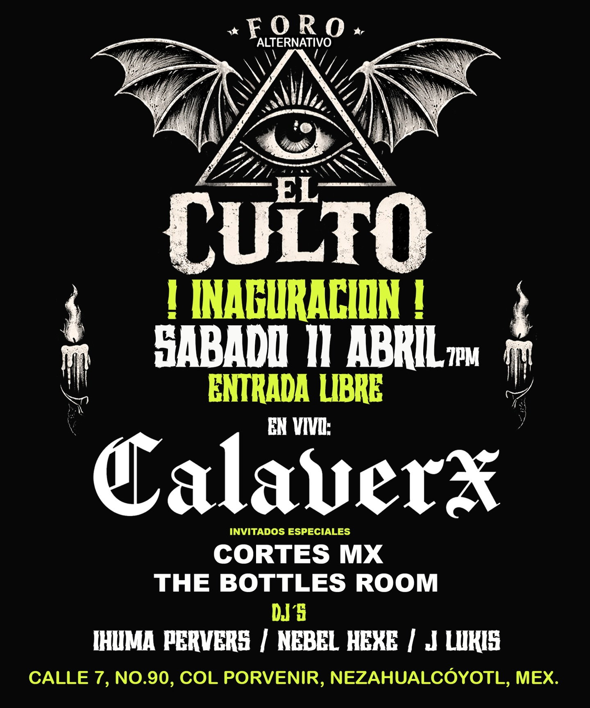
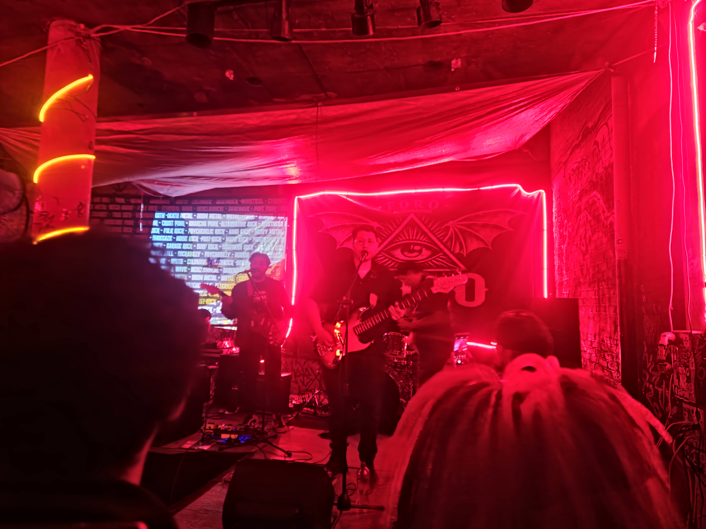
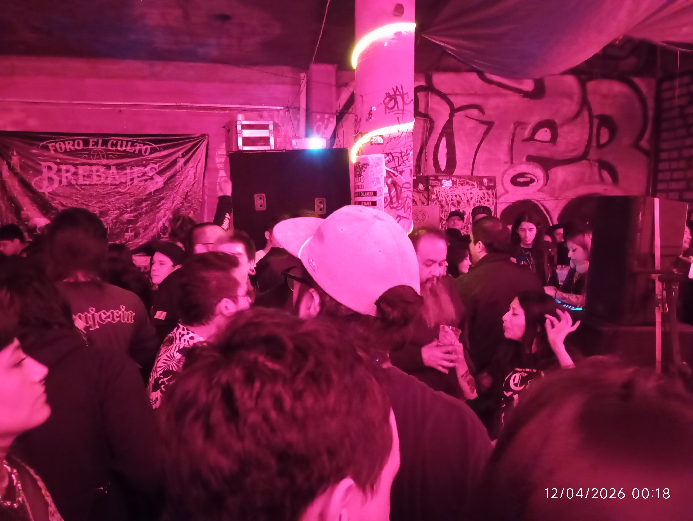
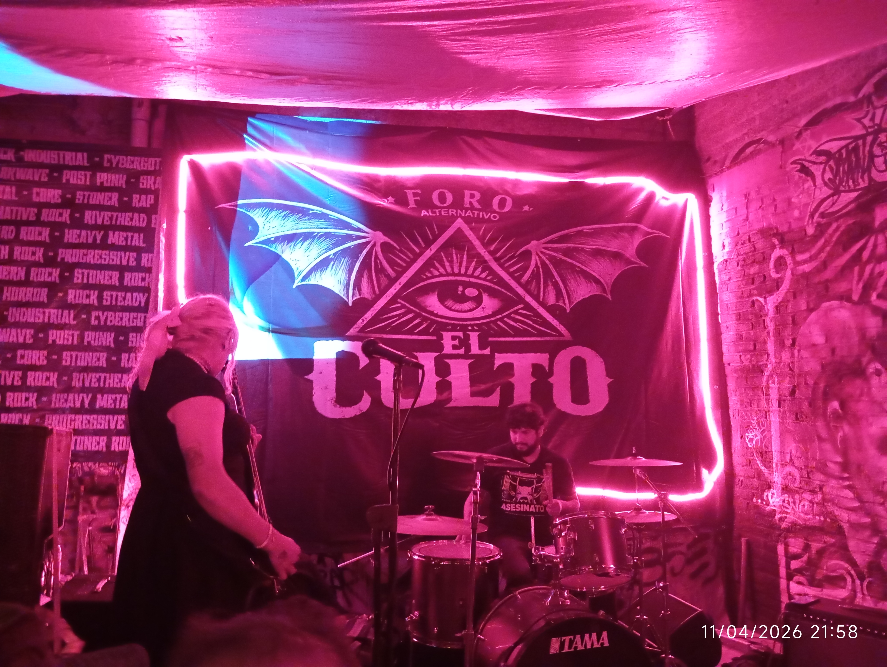
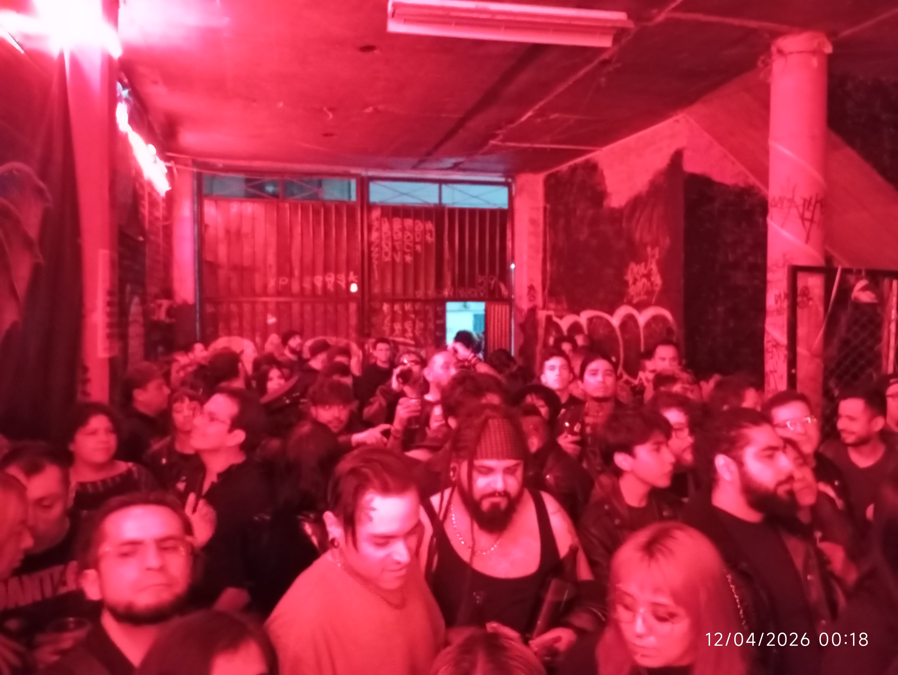
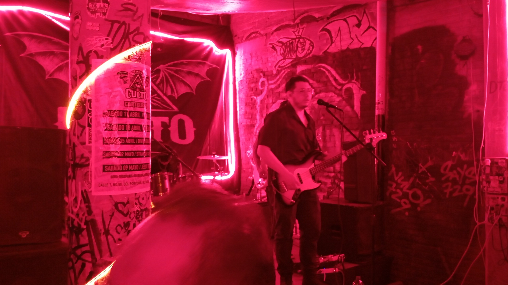
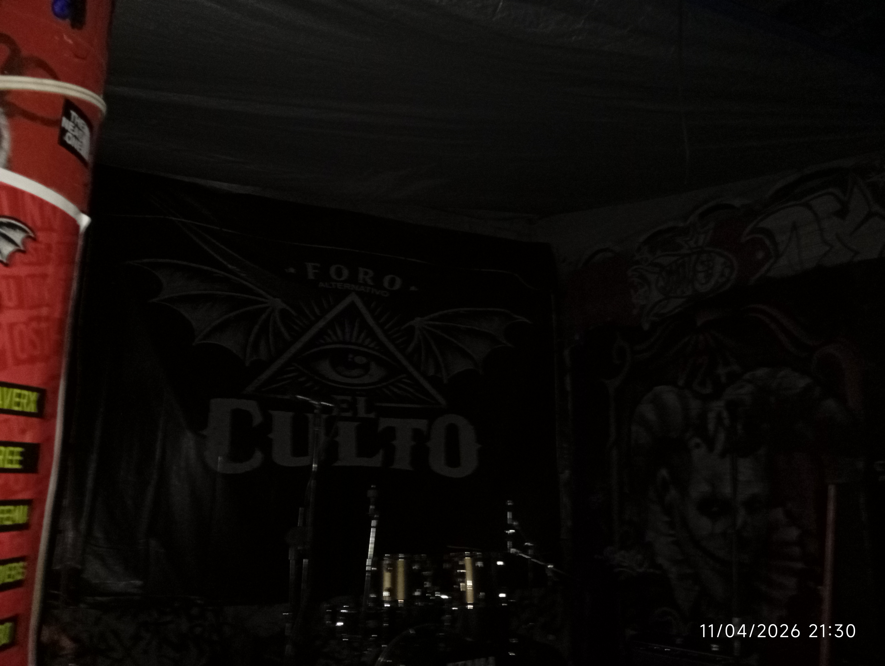
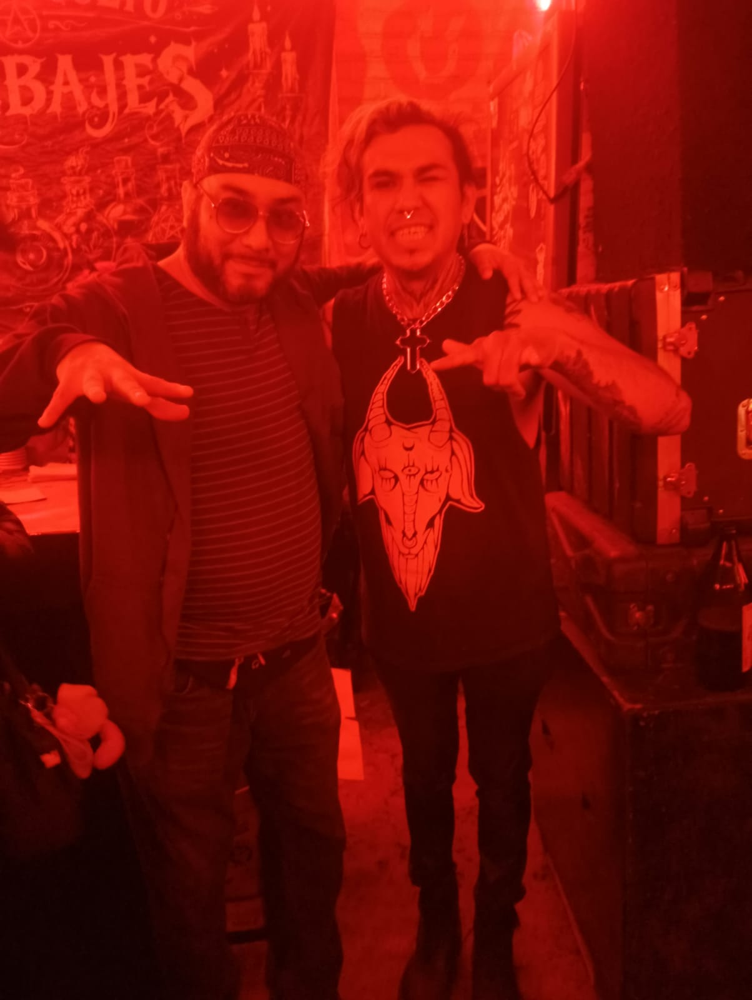
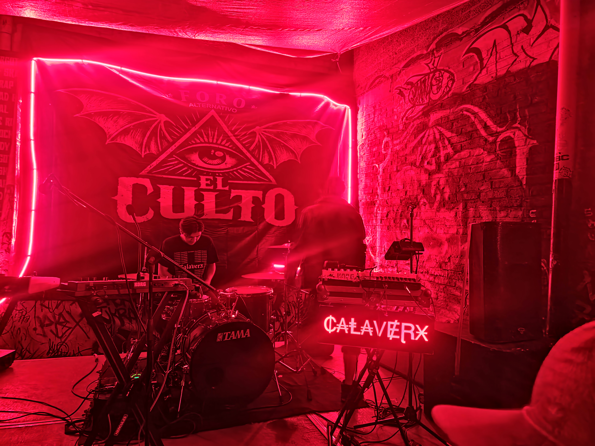
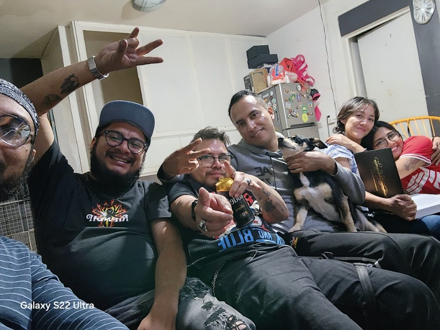

EL CULTO: DONDE
EL PLÁSTICO SE DERRITE

Este sábado 11 de abril, mientras el mundo se ahogaba en su propia basura comercial y producciones de plástico para gente sin alma, un nuevo agujero abrió sus puertas: El Culto. Ubicado en Calle 7 y Pantitlán, está a dos kilómetros del metro; una distancia que se siente como un desierto si vas sobrio, pero que no importa un carajo cuando buscas donde esconderte del sistema.
El capitalismo y sus malditas responsabilidades nos retrasaron, pero llegamos a tiempo. La noche empezó con electricidad pura. Los DJs Ihumas Pervers, Nebel Hexe y J Lukis soltaron descargas eléctricas que poseían a la gente, obligando a los cuerpos a moverse como si la vida dependiera de ello.
LAS BANDAS: RUIDO HONESTO
The Bottles Room: Te golpean con un rock que suena a sombras y a botellas vacías. Es crudo, sin pulir y huele a verdad.
Cortes MX: Tienen esa energía sucia de quien hace ruido para no volverse loco. Mientras no sigan el camino plástico que arranca el corazón, nos tendrán ahí.
GALERÍA: EL CULTO POR LOS LETREADORES









EL PLATO FUERTE: CALAVERX
El sitio estaba a reventar. Calaverx se portó como la bestia nacional que es. Manolo, el vocalista, se mezcló entre la multitud sin pedestales. Cuando himnos como ¡Viva México! retumbaron, el techo casi se viene abajo. Los fallos técnicos al final solo sirvieron para un unplugged sangriento y real.
CARTELERA PRÓXIMOS SÁBADOS
- 18 ABRIL: ZEZAREE
- 25 ABRIL: DIVINA BLASFEMIA
- 02 MAYO: STRANGER & LOVERS
- 09 MAYO: JESSY BULBO